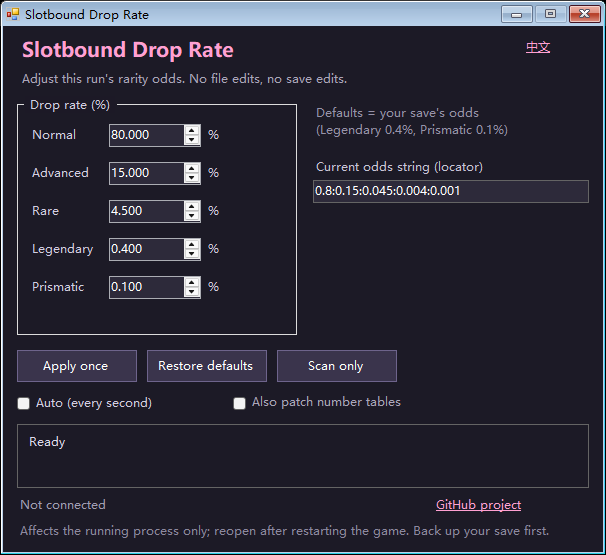

Tune Prismatic and Legendary odds.
One switch.
A drop-rate editor for Slotbound. Rewrites this run's rarity weights in memory — no file edits, no save edits, no multiplayer. Restart the game and everything is back to vanilla.

What it does
Five rarities, fully adjustable
Normal / Advanced / Rare / Legendary / Prismatic. Enter percentages and hit “Apply once”. Defaults match your save: 80 / 15 / 4.5 / 0.4 / 0.1.
Auto re-apply
Tick “Auto” and it re-applies every second, so a freshly started run gets patched automatically without clicking again.
Memory only
The game ships its data in an encrypted Slotbound.dat, so file editing is impossible. This tool only writes to the running process — close the game and it's gone.
Install & use
- Start the game, enter a run and spin once (this creates the odds data).
- Run the tool. Windows will ask for UAC — click “Yes” (Steam usually runs the game elevated, so the tool must match).
- It connects to
Slotbound.exeautomatically; the bottom bar shows “Connected to Slotbound (PID …)”. - Set the five percentages and click Apply once; the status line reports how many matches were written.
- For future runs, tick Auto. To revert, restore the defaults or just restart the game.
Back up %APPDATA%\slotbound_full first. The tool never writes saves, but backups are cheap.
FAQ
“Slotbound.exe not found” / “Cannot open process”
Run the tool as administrator (right-click → Run as administrator) and make sure you are already inside a run. If Steam was started as admin, the game process is elevated and a normal-privilege tool cannot read it.
It says “0 matched”
The run has not generated the odds string yet: spin once and apply again, or just tick “Auto”. If it stays at 0, open a GitHub issue with a screenshot.
Applied, but spins look the same
Some builds cache odds as numbers at run start. Try “Also patch number tables (experimental)”; if that still does nothing, report your game version in the issues.
Can I get banned?
This is a single-player game with no PvP, leaderboards or trading, and the tool only reads/writes its own process memory. It does not touch Steam or any DRM. Use at your own risk.
Mac / Linux / mobile?
No. Windows 10/11 only (.NET Framework 4.x ships with the OS).
Build it yourself
The repo contains the full C# source; it only needs the .NET Framework that ships with Windows:
powershell -ExecutionPolicy Bypass -File build.ps1 → dist\SlotboundDropRate.exe